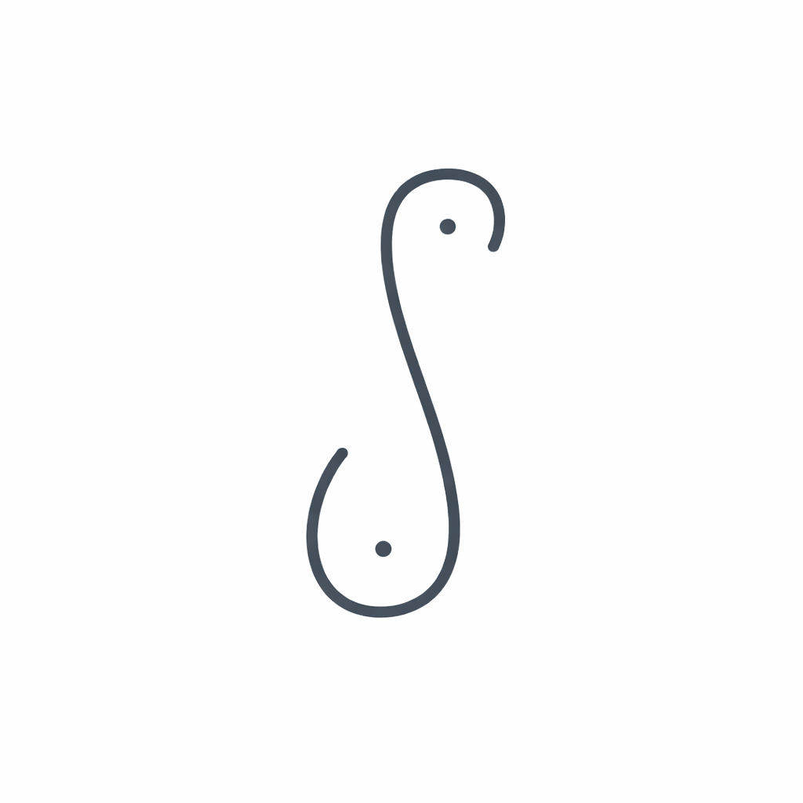

סיון קילשטיין • מדריכת הנקהאיתך לאורך כל הדרך עוד משלב ההריון. הדרכה מקצועית, תמיכה נכונה והמון רגישות בדרך להצלחה האישית שלך.
בואי נדבר בוואטסאפמפגש של כשעתיים בבית או בזום (סביב שבוע 32-36).
* 20% הנחה לייעוץ הנקה לאחר הלידה לנרשמות להכנה
מפגש של כשעתיים בבית החולים או בבית + ליווי בוואטסאפ.
מפגש בבית או מרחוק (כשעה) + ליווי מרחוק עד סיום ההנקה.
גבעתיים, רמת גן, תל אביב, פתח תקווה, בני ברק, ראשון לציון, בת ים, חולון, רמת השרון, הוד השרון, כפר סבא, רעננה, הרצליה והסביבה. במקרים ספציפיים זמינה לייעוץ טלפוני/זום.